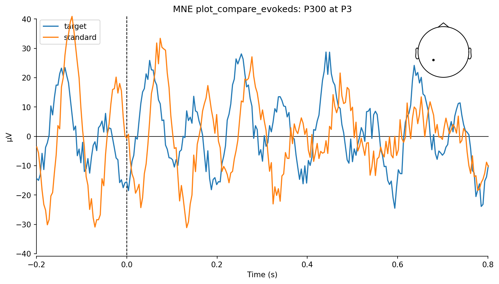
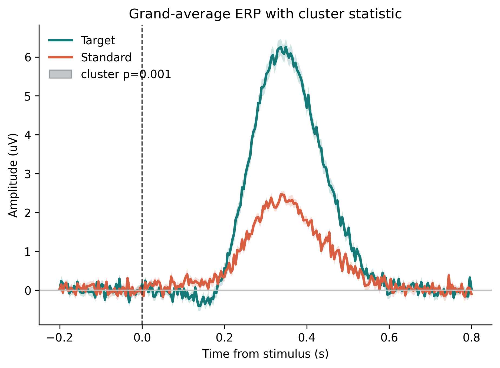
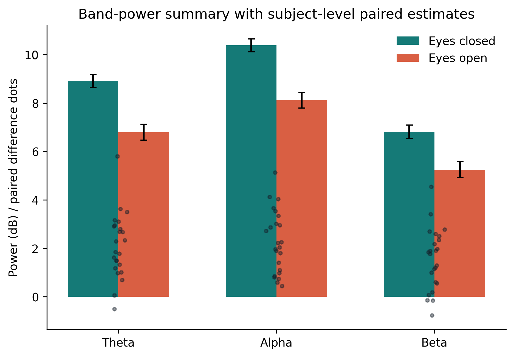
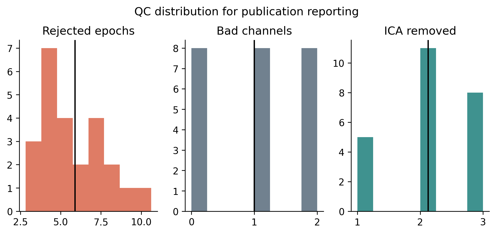
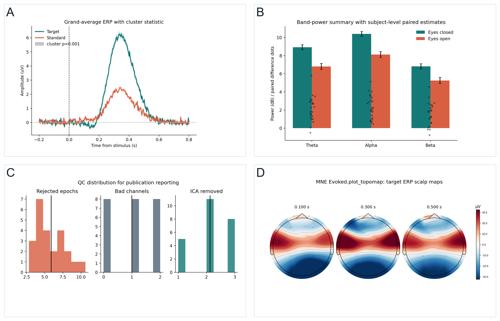

项目：P300 oddball pilot / 10 份 EEG
脑电数据分析总览
我的分析进度
系统会按顺序带你完成上传、选择方法、生成图表、下载结果和申请开票。
新手安全护栏
科研级流程
每一步都提供知识说明、操作者说明和可复现记录。
小白新手教程：照着 8 步点就能完成
你不需要先懂 MNE、EEGLAB 或统计学。每一步都告诉你：为什么做、点哪里、默认选什么、完成后会得到什么。
先建项目
给这次分析取一个名字，比如 P300 oddball pilot。不会填也没关系，系统会给你示例。
点哪里：进入“开始分析”，先确认项目名和数据数量。上传脑电
把 EDF、SET 或 FIF 文件拖进去。系统会自动读取通道、采样率和事件标签。
默认怎么选：直接保留自动识别结果。看懂费用
平台按脑电记录时长计费。10 份数据，每份 1.5 小时，就是 15 小时，费用 15 元。
点哪里：确认费用后点击“提交分析”。不会选方法
选择“我不知道分析方法”。系统会看你的范式和事件标签，自动推荐 ERP/P300。
小白重点：不要自己硬猜算法。使用默认参数
系统会给出适合新手的默认窗口、基线和通道。你可以先不改高级参数。
默认建议：epoch -0.2 到 0.8 秒。查看质控
系统会告诉你有没有坏道、坏段、眨眼伪迹和试次数不足。
出错怎么办：看到红色提示时，先下载质控报告。生成图和表
平台会自动生成主图、统计表、每位被试指标表和方法说明。
点哪里：进入“投稿图”下载结果包。提交或开票
下载结果包后可发给导师、合作者或编辑。费用记录可在线申请发票。
完成后：图、表、方法和复现记录都在下载包里。方法推荐器
选择你看见的事件标签，系统给出 EEG 分析方法、参数和统计路径。
编辑认可清单
新建分析
支持 EDF / BDF / SET / FIF / BrainVision，自动读取事件和采样率。
知识说明
不要直接在单个 trial 或单个通道上做最终结论。平台先得到每位被试的指标，再进入组水平统计。
操作者说明
新手建议选择 ERP 模板，事件设为 stim/target，窗口设为 -0.2 到 0.8 秒。
分析模板
数据段选择
可按相对时间或事件标记提取数据。
分析结果预览
选择不同分析模板，先看看最终图表会长什么样。

提交任务
计费时长
15.0 h
单价 ￥1 / 小时 EEG 数据
分析费用￥15.00
冻结费用￥15.00
上传与识别
读取 EEG 文件头、事件表、通道位置和采样率。
操作者：确认数据格式和被试编号。分段
连续数据按时间窗，任务数据按事件 epoch。
操作者：选择时间窗或事件标记。预处理
滤波、参考、坏道、ICA、伪迹拒绝和 QC 报告。
知识点：预处理参数必须进入方法段。统计
从每位被试导出指标，再做组统计和多重比较校正。
操作者：查看效应量和置信区间。发表包
导出图、表、caption、methods、manifest。
结果：编辑可复核。新手不知道选哪种分析时
平台先问范式和事件标签，再把方法收敛到少数可解释选项。
Oddballtarget/standard -> ERP P300，后顶区 280-420 ms。
Stroopcongruent/incongruent -> ERP N2/P3 或时频 theta。
运动想象left/right -> mu/beta ERD，C3/C4 特征，分类准确率。
静息态eyes open/closed -> PSD、alpha peak、连通性和拓扑。
20 个常见脑电范式
如果你不知道自己的实验属于哪一类，可以先在这里找最接近的范式。
覆盖范式20 / 20
推荐方法自动匹配
输出结果图 + 表 + 方法



待统计数据与统计摘要
平台导出每位被试指标，不用 trial-level 数据虚增自由度。
发表级主图
由真实 MNE 示例结果后处理为投稿图，绑定统计表和 manifest。

图像后处理
调整分辨率、字体、配色和图注，让结果更适合论文和报告。
当前输出：300 dpi、色盲友好、Arial 8 pt，已绑定统计 CSV 和 manifest。
Methods 文本
Figure caption
Analysis manifest
上传数据
大文件上传时会自动续传。网络中断后，重新进入页面也可以继续。
预计耗时-
分片数-
有效吞吐-
线上数据管理
原始数据、派生数据、图表、统计表、发票和审计记录分层存储。
对象存储层状态权限
raw/sub-001.edfHot Object Store可用PI
derivatives/erp.csvWarm Versioned已索引团队
figures/main.pngWarm CDN可下载团队
audit/manifest.jsonImmutable锁定管理员
生命周期
Hot：上传后 90 天，支持快速重跑
Warm：项目期，保存派生数据和图表
Cold：归档，低成本可恢复
支付与计时计费
当前按每小时脑电数据 1 元。你可以选择支付宝或微信支付。
￥1000.00
本次费用
10 份 x 1.5 h15 h
单价￥1 / h
应扣￥15.00
费用按脑电原始记录时长计算，提交分析前会先展示预计扣费。
在线申请开票
支持按项目、按月份或按订单申请电子发票。
等待提交。
开票状态
运营概览
管理员查看客户项目、分析任务、收入、开票和数据存储状态。
96.8%分析成功率近 7 天
11.2 TB客户数据量热存储
23 min平均出图时间ERP 工作流
管理提醒
任务运营
查看上传、预处理、统计、出图和导出任务状态。
任务客户状态操作
ERP-P300-2401认知实验室运行中查看
REST-PSD-2398睡眠中心已完成导出
MI-ERD-2390康复团队待复核质控
N400-2384语言课题组已完成归档
订单与开票管理
管理员审核充值、扣费、订单和电子发票申请。
订单金额状态开票
NC-202606-001￥15.00已支付待开票
NC-202606-002￥326.00已支付已发送
NC-202606-003￥88.00待审核待审核
财务摘要
本月计费时长18,420 h
本月收入￥18,420
待开发票￥2,118
系统状态
后台用于管理员确认上传、分析队列、存储和导出服务是否正常。
16API 服务健康
128分析 worker可扩缩
3.2 Gbps上传吞吐稳定
系统根据任务量自动调整分析队列，并为不同客户保持公平调度。